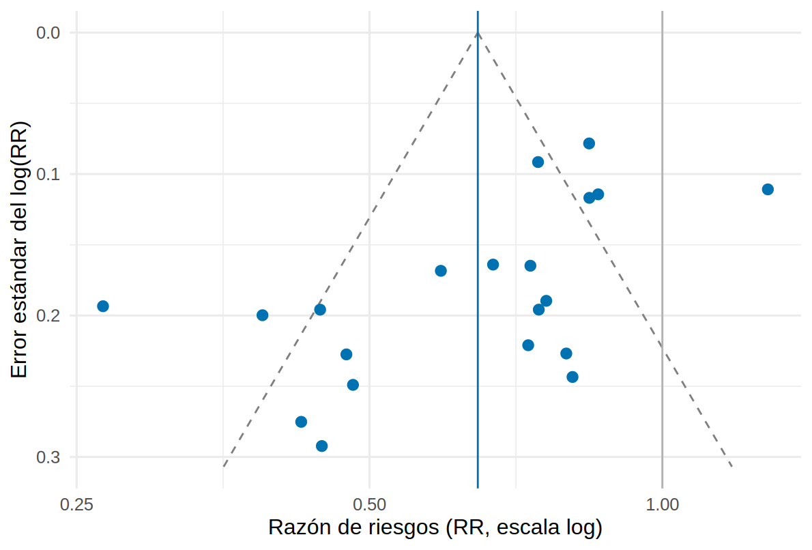

Los dominios de GRADE: cinco que bajan la certeza y tres que la suben
Nota🩺 Escenario
El comité de guías te pide que califiques la certeza del metaanálisis ficticio de 20 ensayos de iSGLT2 (evento renal compuesto). La jefa lo resume así: «no me digas “parece bueno”; dime, dominio por dominio, qué me preocupa y qué dato lo respalda». Vas a hacer un inventario de señales de alerta con el metaanálisis y, solo después, un juicio.
Para un conjunto de ensayos, GRADE examina cinco motivos para bajar la certeza: riesgo de sesgo, inconsistencia, evidencia indirecta, imprecisión y sesgo de publicación. Y tres para subirla, pensados sobre todo para estudios observacionales: efecto grande, gradiente dosis-respuesta y confusión residual que reduciría el efecto.
Lo que vamos a hacer
Medir, con metafor, la señal de alerta de cada uno de los cinco dominios que bajan.
Calcular el tamaño óptimo de información (OIS) y compararlo con un umbral de decisión clínica.
Reunir todas las marcas con una función propia que no califica: la calificación la hace una persona.
library(tidyverse)library(metafor)library(patchwork)source("R/funciones_extra_a.R") # num(), pct()source("R/funciones_cap22.R") # marcas_grade(), ois_rr(), ...theme_set(theme_minimal(base_size =12))# 20 ensayos FICTICIOS de un iSGLT2 vs placebo en ERC (Cap. 21)ensayos <-read_csv("Bases/metaanalisis_isglt2.csv", show_col_types =FALSE) |>mutate(rob_global =factor(rob_global, levels =c("Bajo", "Algunas dudas", "Alto")))res <-rma(yi = log_rr, sei = se_log_rr, data = ensayos, method ="REML") # efectos aleatoriosumbral <-0.90# umbral de decisión clínica (hipotético): RR 0.90n_total <-sum(ensayos$n_trat + ensayos$n_ctrl)p_ctrl <-sum(ensayos$ev_ctrl) /sum(ensayos$n_ctrl) # riesgo del grupo control, todos los ensayospr <-predict(res, transf = exp) # RR agrupado, IC e intervalo de predicciónc(RR = pr$pred, ic_inf = pr$ci.lb, ic_sup = pr$ci.ub, pi_inf = pr$pi.lb, pi_sup = pr$pi.ub) |>round(2)
El umbral de decisión es el efecto por debajo del cual el beneficio ya no cambiaría la conducta; aquí, hipotéticamente, RR 0.90 (una reducción relativa menor del 10 % no justificaría el costo). Lo fija el panel antes de mirar los resultados. El metaanálisis da RR 0.65 (IC 0.55 a 0.76) con 20 ensayos y 33 129 participantes.
Paso 1: riesgo de sesgo
Cada ensayo se evaluó con RoB 2 (cinco dominios; el Cap. 21 lo explica). GRADE pregunta algo distinto: ¿cuánta de la información del metaanálisis viene de ensayos con riesgo de sesgo preocupante? Un ensayo de riesgo alto con 100 pacientes pesa poco; uno con 5 000 pesa mucho. Por eso miramos el peso (la proporción de información) y no solo el número de ensayos.
Qué vemos. Los ensayos de riesgo alto aportan solo el 10 % del peso (2 ensayos); los de «algunas dudas», el 55 %. Si los quitamos, el RR pasa de 0.65 a 0.63: casi no se mueve, y la prueba de diferencias entre categorías de riesgo no es significativa (p = 0.27). La señal de alerta es débil. Ojo con la lectura de «algunas dudas»: no es «bajo», pero tampoco el riesgo alto que obliga a bajar la certeza.
Paso 2: inconsistencia
La inconsistencia (heterogeneidad no explicada) es que los ensayos no dicen lo mismo. Cuatro marcas: el I² (porcentaje de la variabilidad que no es azar de muestreo), la prueba Q, el intervalo de predicción (dónde caería el efecto de un ensayo nuevo) y los ensayos que apuntan en sentido opuesto.
Bosque de los 20 ensayos ficticios (RR de evento renal compuesto, escala logarítmica). Tamaño = peso; color = riesgo de sesgo global. Rombo: efecto agrupado; barra gris: intervalo de predicción; línea discontinua: umbral de decisión (RR 0.90). Datos ficticios.
Qué vemos. El I² es 81 % (τ = 0.32; Q con p < 0.0001): hay mucha heterogeneidad. El intervalo de predicción va de 0.34 a 1.24, es decir, incluye el 1: en un ensayo nuevo el fármaco podría no ayudar. Solo 1 ensayo (MIRA (2016)) apunta en contra, pero los efectos van de RR 0.27 a 1.28. Para GRADE, lo que importa es si esa diferencia cambiaría la decisión.
¿Se explica? Si había una razón previa para esperar que el efecto dependa de la albuminuria, la heterogeneidad se puede examinar con una metarregresión:
mr <-rma(yi = log_rr, sei = se_log_rr, mods =~log(uacr_media), data = ensayos, method ="REML")pendiente_verdadera <--0.25# verdad del simulador: log(RR) cambia -0.25 por cada unidad de log(UACR)c(pendiente =coef(mr)[[2]], p = mr$QMp, R2 = mr$R2, tau_residual =sqrt(mr$tau2), pendiente_verdadera = pendiente_verdadera) |>round(3)
pendiente p R2 tau_residual
-0.329 0.008 33.355 0.263
pendiente_verdadera
-0.250
Qué vemos. El efecto es mayor con albuminuria más alta: pendiente -0.33 (p = 0.008; la verdad simulada es -0.25) y explica un 33 % de la heterogeneidad. El τ residual (0.26) queda cerca del verdadero (0.25). Dos lecturas razonables: bajar por inconsistencia el resultado global, o separar la pregunta por albuminuria (lo haremos en 22.5). Ambas se justifican por escrito.
Paso 3: evidencia indirecta
La evidencia indirecta aparece cuando los ensayos no responden exactamente tu pregunta: otra población, otra dosis o fármaco, otro comparador, un desenlace sustituto en lugar del que importa. Aquí no hay un número que calcular: es comparar el PICO de los ensayos con el tuyo.
# A tibble: 4 × 3
variable min max
<chr> <dbl> <dbl>
1 pct_dm 32 98
2 tfg_media 29 63.9
3 uacr_media 120 938
4 seguimiento_meses 13 46
Qué vemos. Los ensayos incluyen de 32 % a 98 % de pacientes con diabetes y albuminuria media de 120 a 938 mg/g. Si tu pregunta es «ERC con albuminuria, con o sin diabetes», la población es directa. Si fuera «ERC sin albuminuria», sería indirecta. Y para la pendiente de TFGe, que es un marcador sustituto del evento renal, hay un motivo adicional de indirecta (lo aplicamos en 22.3). El dominio depende de la pregunta, no solo de los datos.
Paso 4: imprecisión
Hay imprecisión cuando el intervalo de confianza es tan ancho que cambiaría la decisión, o cuando hay muy poca información. Dos comprobaciones: (a) si el IC incluye el umbral de decisión (RR 0.90) o el valor nulo; (b) si se alcanza el tamaño óptimo de información (optimal information size, OIS): el tamaño de muestra que exigiría un solo ensayo bien diseñado para la misma pregunta, ajustado por heterogeneidad (dividido entre 1 − I²), porque con ensayos que discrepan hace falta más información.
Aquí \(p_1\) es el riesgo en el control (11.4 %), \(p_2 = p_1 \times\) RR esperado y \(\bar p\) su promedio. Con el RR que el panel espera detectar (0.75, reducción del 25 %), a mano y con power.prop.test:
ois_075 <-ois_rr(p_ctrl, rr =0.75, i2 = res$I2 /100) # función propia (a mano)n_pt <-power.prop.test(p1 = p_ctrl, p2 = p_ctrl *0.75, power =0.80, sig.level =0.05)$nc(a_mano = ois_075$n_por_grupo, power.prop.test =ceiling(n_pt))
a_mano power.prop.test
1729 1729
# ¿Cuánto cambia el OIS según el efecto esperado?map_dfr(c(0.75, 0.85, 0.90), \(r) ois_rr(p_ctrl, rr = r, i2 = res$I2 /100)) |>mutate(participantes_reales = n_total, se_alcanza = participantes_reales >= n_total_ajustado)
Qué vemos. Las dos vías coinciden (1729 por grupo, 3 458 en total). Ajustado por el I² de 81 % (factor 5.3), el OIS es 18 426 y el metaanálisis tiene 33 129: se alcanza. Pero el OIS depende de un supuesto: si el efecto «relevante» fuera RR 0.85, ya no se alcanzaría (53 776). Por eso se combina con el IC: el IC va de 0.55 a 0.76, no incluye el 1 ni el 0.90. En conjunto, la señal de imprecisión es débil.
Paso 5: sesgo de publicación
Si los ensayos pequeños con resultados desfavorables no se publican, el metaanálisis ve una muestra optimista. El gráfico de embudo representa el efecto de cada ensayo frente a su error estándar: sin sesgo debería parecer un embudo simétrico (los ensayos pequeños se dispersan más, pero hacia ambos lados). Se complementa con la prueba de Egger (regresión del efecto sobre su error estándar) y el método trim-and-fill, que imputa los ensayos «faltantes» y recalcula. Con menos de 10 ensayos estas pruebas no son fiables.
eg <-regtest(res, model ="lm") # prueba de Egger clásicatf <-trimfill(res)c(Egger_p = eg$pval, ensayos_faltantes = tf$k0, RR_trim_fill =exp(coef(tf))[[1]], RR_original =exp(coef(res))[[1]]) |>round(3)
se_seq <-seq(0, max(ensayos$se_log_rr) *1.05, length.out =50)lim <-tibble(se = se_seq, inf =exp(coef(res) -1.96* se_seq), sup =exp(coef(res) +1.96* se_seq))ggplot(ensayos, aes(exp(log_rr), se_log_rr)) +geom_line(data = lim, aes(inf, se), linetype ="dashed", color ="grey50") +geom_line(data = lim, aes(sup, se), linetype ="dashed", color ="grey50") +geom_vline(xintercept =exp(coef(res)), color ="#0072B2") +geom_vline(xintercept =1, color ="grey70") +geom_point(size =2.4, color ="#0072B2") +scale_y_reverse() +scale_x_log10(breaks =c(0.25, 0.5, 1, 1.5)) +labs(x ="Razón de riesgos (RR, escala log)", y ="Error estándar del log(RR)")

Gráfico de embudo del metaanálisis ficticio. Línea continua: RR agrupado; líneas discontinuas: límites de seudo-IC 95 % alrededor del agrupado. Falta la esquina inferior derecha (ensayos pequeños sin efecto o desfavorables). Datos ficticios.
Qué vemos. La prueba de Egger da p = 0.0049 (asimetría marcada) y trim-and-fill imputa 3 ensayos del lado desfavorable; con ellos, el RR pasa de 0.65 a 0.71 (IC 0.59 a 0.86), más cerca del RR verdadero de 0.75 de todos los ensayos hechos. Es la huella del sesgo de publicación simulado: de los 7 ensayos más pequeños (error estándar > 0.2), 0 tiene un RR por encima de 1. Pero incluso corregido, el IC sigue por debajo de 0.90: el beneficio parece real, aunque exagerado.
Advertencia⚠️ Asimetría del embudo no es lo mismo que sesgo de publicación
Un embudo asimétrico también aparece cuando los ensayos pequeños tienen otra población (p. ej. más albuminuria), peor calidad o cuando hay heterogeneidad real. Aquí sabemos, por la simulación, que la causa es la publicación selectiva; en la vida real solo lo sospechas. Y no cuentes dos veces el mismo problema: si ya bajaste por riesgo de sesgo porque los ensayos pequeños son de peor calidad, no bajes también por publicación sin explicar por qué son problemas distintos.
Paso 6: los tres dominios que suben la certeza
Estos tres solo se consideran cuando no hay motivos para bajar y suelen aplicarse a estudios observacionales (se desarrollan en 22.4):
Efecto grande: RR < 0.5 o > 2 (muy grande: < 0.2 o > 5), con pocas explicaciones alternativas.
Gradiente dosis-respuesta: más exposición, más efecto.
Confusión residual que reduciría el efecto: todos los sesgos plausibles empujarían el resultado hacia el nulo, y aun así se ve efecto.
En este metaanálisis de ensayos no se aplican: partimos de «alta» (no se puede subir) y el RR agrupado (0.65) no es «grande». La pendiente con la albuminuria parece un gradiente, pero es una diferencia entre ensayos en la población, no una relación dosis-respuesta del fármaco.
Paso 7: todas las marcas juntas (la función no califica)
marcas_grade() reúne en una tabla los indicadores de cada dominio. Cada fila dice si la marca «salta» según una referencia orientativa (heurística propia, no una regla de GRADE). No devuelve una calificación: eso lo decide una persona.
señal si cambia la posición del IC respecto al umbral
no
Inconsistencia
I²
81 %
señal si ≥ 50 %
SÍ
Inconsistencia
Prueba Q (p)
< 0.0001
señal si p < 0.10
SÍ
Inconsistencia
Intervalo de predicción
0.34 a 1.24
señal si incluye el valor nulo
SÍ
Inconsistencia
Estudios en sentido opuesto al agrupado
1
informativa
—
Evidencia indirecta
Población, intervención, comparador y desenlace vs. tu pregunta
revisar a mano
ninguna: compara el PICO de los estudios con el tuyo
—
Imprecisión
IC 95 % del efecto agrupado
0.55 a 0.76
informativa
—
Imprecisión
El IC incluye el valor nulo
no
señal si incluye el nulo
no
Imprecisión
El IC incluye el umbral de decisión (0.90)
no
señal si el umbral cae dentro del IC
no
Imprecisión
Participantes vs. OIS ajustado
33 129 de 18 426
señal si no se alcanza el OIS
no
Sesgo de publicación
Prueba de Egger (p)
0.0049
señal si p < 0.10
SÍ
Sesgo de publicación
Estudios «faltantes» (trim-and-fill)
3
informativa
—
Sesgo de publicación
Estimación tras trim-and-fill
0.71 (0.59 a 0.86)
señal si el IC corregido incluye el umbral
no
Qué vemos. Saltan 4 de 10 marcas calculables, concentradas en inconsistencia y sesgo de publicación; riesgo de sesgo e imprecisión no saltan, y la evidencia indirecta no se puede calcular. Con este inventario, una lectura razonable (no la única) sería: bajar un nivel por inconsistencia y uno por sesgo de publicación, es decir, de alta a baja. Alguien podría argumentar que el beneficio es consistente en dirección (solo un ensayo en contra) y la heterogeneidad se explica por la albuminuria, y quedarse en moderada. Esa discusión, con razones escritas, es GRADE.
Tip💡 Con el paquete meta
El autor usa meta para esto. No está instalado en el entorno de pruebas del libro (código no verificado aquí); la versión de metafor de arriba es la que se ejecuta.
library(meta)m <-metagen(TE = log_rr, seTE = se_log_rr, studlab = estudio, data = ensayos, sm ="RR",common =FALSE, random =TRUE, method.tau ="REML", prediction =TRUE)summary(m) # I2, tau2, intervalo de predicciónmetabias(m, method.bias ="linreg") # prueba de Eggerfunnel(m) # embudotrimfill(m) # trim-and-fill
Importante🎯 En resumen
Cada dominio tiene una marca medible: peso en ensayos de riesgo alto, I² e intervalo de predicción, IC frente al umbral y OIS, y asimetría del embudo (aquí: 10 % de peso en riesgo alto; I² 81 %; Egger p = 0.0049).
El intervalo de predicción (0.34 a 1.24) dice más que el IC del agrupado sobre qué pasaría en un ensayo nuevo.
El OIS se ajusta por heterogeneidad y depende del efecto esperado; se usa junto con el IC y el umbral de decisión.
La evidencia indirecta no sale de los datos sino de comparar el PICO.
Las marcas no califican: la calificación y su justificación son de una persona.
Ejercicio
Cambia el umbral de decisión a RR 0.75 y vuelve a ejecutar marcas_grade(). ¿Qué dominio cambia y por qué?
Calcula el OIS para RR 0.80 con riesgo en el control de 5 % y de 20 %. ¿Con cuál se necesita más información?
Repite el embudo y Egger solo con los 10 ensayos de mayor tamaño. ¿Desaparece la asimetría? ¿Qué te dice eso?
Referencias
Guyatt GH, Oxman AD, Kunz R, et al. GRADE guidelines 6. Rating the quality of evidence: imprecision. J Clin Epidemiol. 2011;64:1283-1293 (por verificar).
Guyatt GH, Oxman AD, Kunz R, et al. GRADE guidelines 8. Rating the quality of evidence: indirectness. J Clin Epidemiol. 2011;64:1303-1310 (por verificar).
Balshem H, Helfand M, Schünemann HJ, et al. GRADE guidelines: 3. Rating the quality of evidence. J Clin Epidemiol. 2011;64:401-406.